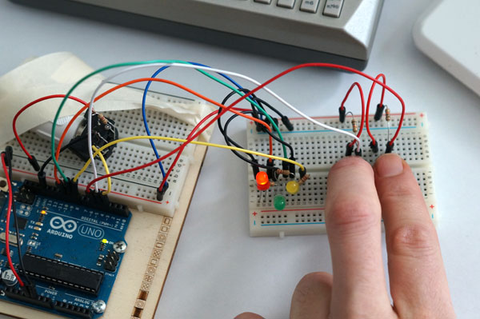
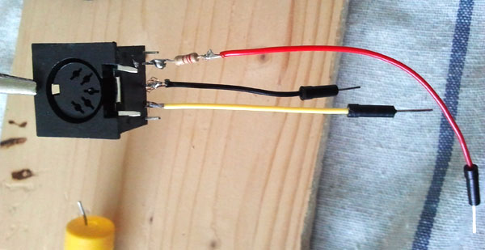
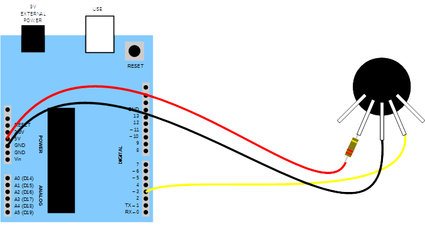
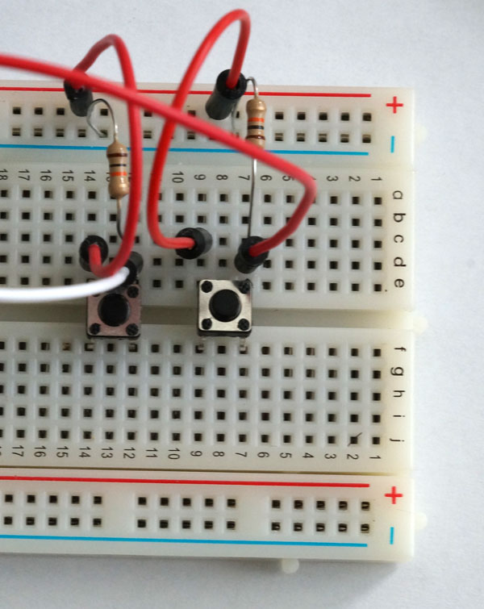
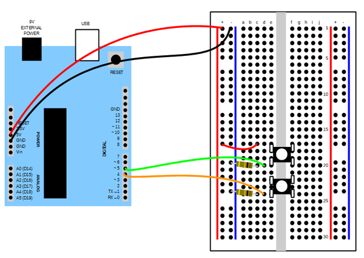
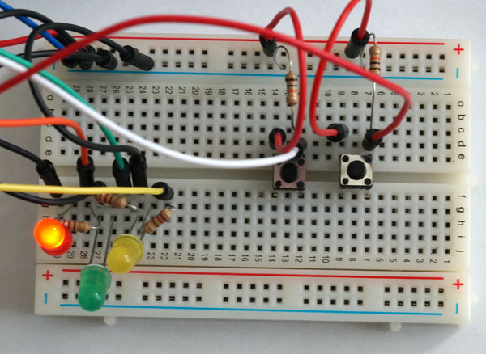
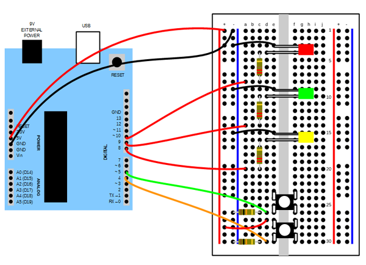

Arduino and MIDI out

Note! We have received some concern about connecting "directly" from the Arduino to the MIDI in port of a HW synth. Although we have done this successfully with several different HW setups, note that LMP does not take any responsibility for any catastrophic results of this tutorial. In the next part of this tutorial, "Arduino and MIDI in", we will introduce the optocoupler.
In this tutorial we will learn to use the Arduino micro-controller as a tool to control musical instruments through MIDI. We will assume you have some basic understanding of what a program is, as well as functions and variables. If not:
- A
program is a collection of statements and functions that tells the computer (the Arduino) what to do. - A
function is a way of grouping and naming a couple of lines of code so that you can reuse them. Arduino has two special functions that must be present in all projects. The first is calledsetup and is called once when the program starts. The seconds is calledloop . The Arduino will run the loop function continously until it is powered off. - A
variable is a box that can hold different values. It is given a name so that you can change and read the value.
This tutorial also assumes you have a computer running the Arduino IDE, as well as an Arduino connected with an USB cable. Instructions on how to install the Arduino IDE.
You must also have a GM-compatible synth (as most are, and if it is not, you will still be able to do most of the tutorial) and a MIDI cable. For this tutorial I have used an old (and small!) Yamaha QY70 MIDI workstation.
1. MIDI out
MIDI is a serial protocol for talking to synths. As the Arduino is already very capable of talking serially, making a MIDI out interface is very easy.
You will need:
- a MIDI DIN contact
- a 220 Ohm resistor
Both of these can be bought at your local electronics store or on Ebay.
You solder the DIN contact like this:

and connect the parts like this:

You can test the interface using this simple code which outputs a short sequence of notes:
Make sure to put the source code in a folder named "midi_out".
Note
As you can see in the code
const int t4 = t2/2; // 128
const int t8 = t4/2; // 64
const int t16 = t8/2; // 32
we are using a BPM value of 128. For our purposes (and for the code to work properly later on in the tutorial) it is a good idea to keep the BPM as a value that will divide nicely, so that the calculations of the following constants will not create any rounding errors.
Exercise
Try changing the note values and the note lengths. Can you make it play a melody?
2. Program control
If you test and change the code and re-upload new sketches (as programs for the Arduino are called), notes will probably be sounding as the program is interrupted between a NOTE ON and a NOTE OFF message.
To get rid of this, we will add a short loop in the setup function that sends the ALL NOTES OFF and ALL SOUNDS OFF on all 16 MIDI channels.
for (int i = 0; i < 16; i++) {
midiData2((0xB0 | i), 0x78, 0);
delay(midiSendDelay);
midiData1((0xB0 | i), 0x7B);
delay(midiSendDelay);
}
Now we will introduce dynamic control of the MIDI commands. Let’s start by panning the note sequence. We will use a variable to control the pan. In MIDI, the pan value can go from 0 (extreme left) to 127 (extreme right), so we will let the variable step through these values and send out a MIDI pan message for each value.
And why not dynamically control the pitch too? We use a variable for the MIDI note value and let it increase by 3 for each iteration.
pan = pan + 5;
if (pan > 127)
{
pan = 0;
}
midiData2((0xB0 | voiceMidiChannel), 10, pan);
if (note > 90)
{
note = 24;
}
midiNote(midiNoteOn + voiceMidiChannel, note, midiVelocity);
delay(t8);
midiNote(midiNoteOff + voiceMidiChannel, note, midiVelocity);
Download midi_out_pan.ino and try it out.
Exercise
Introduce other controllers and step through them, for example MIDI cutoff and resonance.
3. User control
Now we can control our synth with a program. But how about some user interaction? For this part you will need:
- 2 x momentary push buttons (buttons that don't "get stuck" in a position)
- 2 x 10 kOhm resistors
- wires for connections
- a breadboard to make all the connections
Add the push buttons

and connect them

The push buttons are read by the Arduino on two different pins (inputs).
First we have to tell the Arduino what pins we are using and that they are inputs. We do that in the setup function.
pinMode(pinUp, INPUT);
The two (constant) variables pinDown and pinUp are declared at the start of the program. The const word means that their value can't be changed.
We read the values in our loop function and play two different notes depending on which button is pressed.
if (digitalRead(pinDown) == HIGH)
{
midiNote(midiNoteOn + voiceMidiChannel, 48, midiVelocity);
delay(t8);
midiNote(midiNoteOff + voiceMidiChannel, 48, midiVelocity);
}
if (digitalRead(pinUp) == HIGH)
{
midiNote(midiNoteOn + voiceMidiChannel, 51, midiVelocity);
delay(t8);
midiNote(midiNoteOff + voiceMidiChannel, 51, midiVelocity);
}
Download midi_out_control.ino and try it out.
Exercise
Use a light sensitive resistor instead of the push buttons to make a simple theremin type controller. Use the map function to map the input to a proper range.
4. A simple MIDI sequencer
And now for the grand finale in this tutorial: A MIDI sequencer with a simple remix functionality! Although this might sound more fancy than it is, this code can be a framework for all kinds of multitimbral sequence based projects.
First we will add some hardware: the LEDS. They will show which sequence we are currently playing. Use the buttons from the previous step and add the LEDs (and resistors). So for this part you will also need:
- 3 x LEDs (one yellow, one green and one red, one for each kind of sequence: Intro/Outro, Verse and Chorus)
- 3 x 220 ohm resistors
- some more wires


The buttons are connected as in the previous step. They will allow the user to cycle through a predetermined list of sequences (stored in the song array).
We will now control several
Each voice will have one or more
Each sequence contains a list of
Which sequence to play is decided by a state variable (sequenceIndex), so that we can move between the blocks just like a true software sequencer plays a song.
For that, we will do some
This object will contain some important properties of the voice:
byte midiChannel; // MIDI channel
note notes[maxNotes]; // the notes in the currently playing sequence
int numberOfNotes; // number of notes in notes[]
int currentNote; // note currently playing - index into notes[]
unsigned long currentNoteStart; // time in ms when current note started playing
as well as functions (called methods in OOP programming) that play the sequences:
void noteStart();
void noteStop();
void initSynthVoice(byte, int, int, int, int);
The notes are stored in an array of structs. What does this mean?
A
An
We will initialize all the voices (objects) in the setup function.
In the loop function we will tell the objects to play the next note (if it is time to do so = if the previous note has finished) as well as check if the user has pressed any buttons. As the loop executes quite fast, we have to introduce some timing, so that it is only possible to press a button once every half second (500 ms).
if ((digitalRead(pinDown) == HIGH) && (currentTime - pushTime > 500))
{
sequenceIndex--;
pushTime = millis();
if (sequenceIndex < 0) {
sequenceIndex = 0;
}
lightLeds(sequenceIndex);
}
{
sequenceIndex++;
pushTime = millis();
if (sequenceIndex > maxSequences) {
sequenceIndex = maxSequences;
}
lightLeds(sequenceIndex);
}
Download midi_sequencer.ino and try it out by pressing the buttons so the sequencer moves through the different sequences. The LEDs will show which sequence is playing.
Exercises
- Use other controllers for selecting sequences.
- Implement sound/patch selection using banks for non-GM synths (for example XG or other standards)
Memory
As the Arduino Uno only has 2K memory, the length of sequences and the number of voices will be a problem. We solve this by keeping the sequences short (max 16 notes) and the number of voices low.
Other possible solutions that you can explore would be:
- to use the Arduino Mega which has 8K RAM.
- to get an SD card reader for the Arduino and keep the sequences on a card, and only read them into RAM when you need them.
- to create the sequences not as static arrays, but as programmatically created note values.